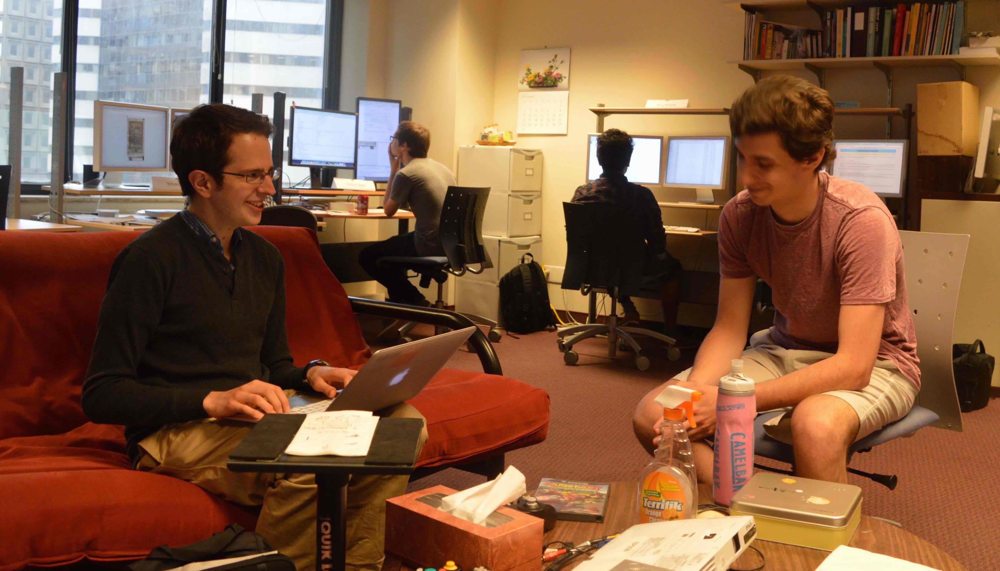
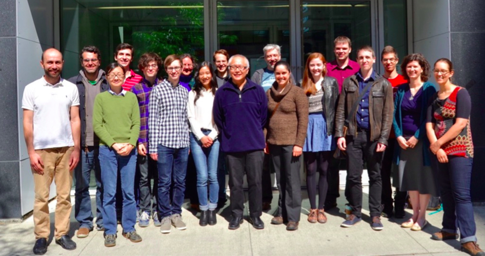

SIMSSA student profiles
Posted by sagransj on June 30, 2015
I recently visited the McGill music technology labs, meeting many of the students (plus one postdoc) who are working on the SIMSSA project and learning about the work they are doing this summer.
 Post author Jacob Sagrans talking with Ian Karp at the Digital Distributed Music Archives and Libraries (DDMAL) lab at McGill University’s Schulich School of Music. Photo taken by Ling-Xiao Yang, June 22, 2015.
 Photo of SIMSSA project members outside the Schulich School of Music in Montreal. From left to right: Alexander Morgan, Ryan Bannon, René Rusch, Ian Karp, Evan Magoni, William Bain, Julie Cumming, Yihong Luo, Jacob Sagrans, Ichiro Fujinaga, Jon Wild, Catherine Motuz, Marina Borsodi-Benson, Andrew Hankinson, Alexandre Parmentier, Tristano Tenaglia, Karen Desmond, Jane Hatter. Photo taken by Darryl Cameron, June 3, 2015.
Below are brief profiles of everyone I talked to and summaries of the work they are doing. This will also serve as an introduction to many of the projects that are currently going on as part of SIMSSA.
William Bain: William is an undergrad in computer science who began working for SIMSSA in May. He is spending most of his time on the Cantus Ultimus website, integrating all the components needed to properly display manuscripts, components such as the Diva image viewer and data from the CANTUS chant database (read more about Diva below).
Ryan Bannon: Ryan is a music theory undergrad with previous degrees in mathematics and science. He has worked for Ichiro Fujinaga’s lab for the past three years. Currently he is working on improving VIS, a web app that analyzes counterpoint, by getting it to use the Rodan workflow process. This will make the app more flexible.
Marina Borsodi-Benson: Marina, who is a music theory undergrad, joined SIMSSA in May. She is working with the MEI format for music encoding, identifying bugs that occur when exporting MEI files from Sibelius (via this plugin), and also when opening MEI files in Verovio, .
Andrew Hankinson: Andrew recently completed his PhD in music technology at McGill and is currently a postdoctoral fellow for SIMSSA. He has been working for the project since 2011. This summer, he is supervising the students working for SIMSSA, helping them develop the tools and technology the project needs in order to run. He is also giving presentations about SIMSSA at three conferences: the Music Encoding Conference, the International Association of Music Libraries (IAML) congress, and the Medieval and Renaissance Conference.
Ian Karp: Ian is studying for a Bachelor’s degree in computer science at McGill. He started working for SIMSSA in May, and so far has worked mostly on Gamera, a document analysis system. He is trying to improve Gamera for optical music recognition (OMR), so that it can better handle deformities in scores and can process different types of musical notation.
Rivu Khoda: Rivu is an undergrad in cognitive science at McGill, specializing in computer science and psychology. He has been working for SIMSSA since May, focusing on Rodan for OMR. Along with Yihong and Ling-Xiao, Rivu has worked on automatizing the workflow process for displaying searchable data with the images of the Salzinnes antiphonal.
Yihong Luo: Yihong began working for SIMSSA in May. She is a McGill undergrad student in computer science and mathematics. Like Rivu, she has worked mostly on the Rodan workflow process for the Salzinnes antiphonal. She has found it especially interesting to work on image segmentation, specifically getting rid of borders and lyrics to make it easier to find and process musical notation, as it has taught her a lot about image processing.
Evan Magoni: Evan just graduated from McGill with a Bachelor’s degree in philosophy. He has been with SIMSSA for one year, and has been working most recently on Diva.js, a web viewer for high-resolution images. Diva is an essential component for displaying manuscript images for Cantus Ultimus.
Alexander Morgan: Alex is a doctoral student in music theory at McGill. He has been working for ELVIS, the analysis branch of SIMSSA, since the summer of 2012. This summer he is working on integrating machine learning into analyses run in VIS, the ELVIS web app for musical analysis.
Alexandre Parmentier: Alex began working for SIMSSA in May. He is an undergraduate student in computer science at McGill and is currently working on the ELVIS database, improving uploading and downloading capabilities as well as the database’s organization.
Tristano Tenaglia: Tristano is a recent McGill grad (in civil engineering) who joined SIMSSA in May. He is building a program to convert MEI files to MIDI, which will allow us to hear the files and also to analyze them with tools such as Corey McKay’s jMIR suite.
Gabriel Vigliensoni: Gabriel has been involved with SIMSSA since 2011. He is a PhD student in music technology at McGill. This summer he is working mostly on the SIMSSA and Cantus Ultimus static websites.
Ling-Xiao Yang: Ling-Xiao is a master’s student in music technology who has been with SIMSSA for the past year. Along with Rivu and Yihong, he is spending most of his time working on the Rodan workflow process for OMR.
Most of the people I spoke to were drawn to SIMSSA because they have backgrounds in both music and STEM fields and liked the idea of working for a project that combined the two.
If you would like to learn more about the SIMSSA project or get in touch with any of the students profiled in this post, please contact our Principal Investigator Ichiro Fujinaga.